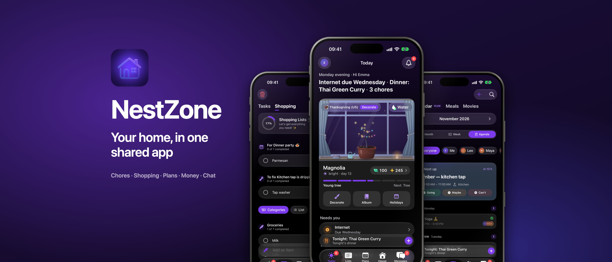
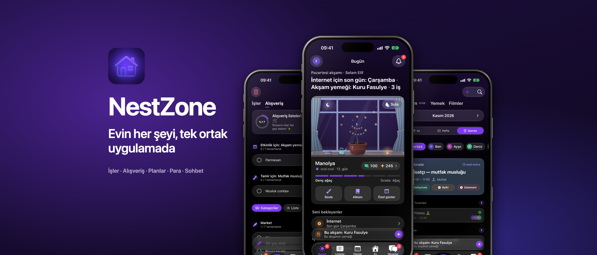
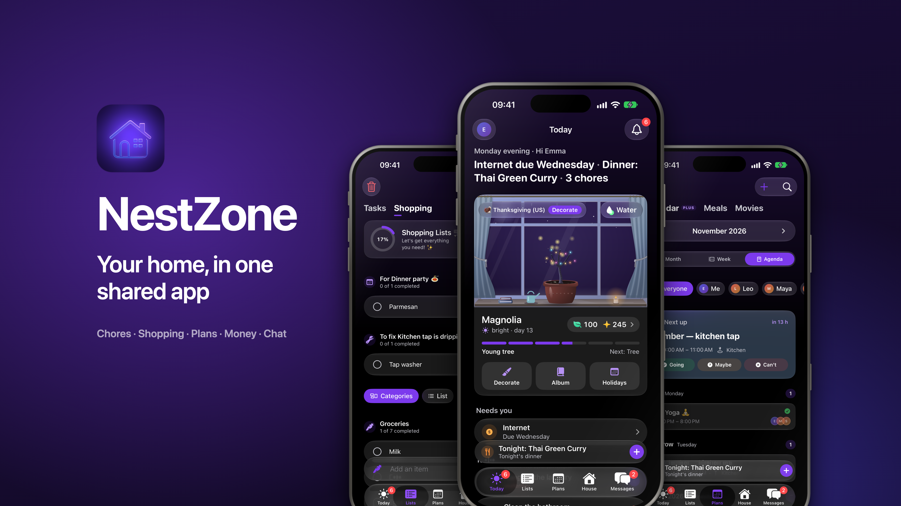
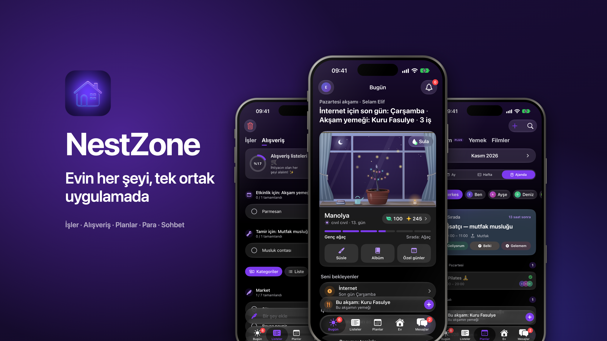

App Store marketing assets
The App Preview video and the "Header and Search Results" image for 1.13, in English and Turkish, built from the screenshot houses (made-up members, persona "Emma"). Nothing here shows a real person, face or house.
App Preview (iPhone 6.9")
English, preview-en.mp4
Turkish, preview-tr.mp4
886 x 1920, H.264 High, 30 fps, 22.6 s, about 6 MB, stereo AAC 48 kHz (a generated soft chord, so nothing to license). Six shots, 0.4 s crossfades; every frame is the app itself captured from the simulator, with one caption per shot.
| # | Shot | Captured with | EN caption | TR caption |
|---|---|---|---|---|
| 1 | Today | -todayGlide 1 -pinnedDemo 1 | Your home, today | Bugün evde ne var? |
| 2 | Shopping to Tasks | -openTab lists -segmentCycle 4 -shoppingGroupedDemo 1 -appTabSegments "calendar,tasks,finance" | Chores and shopping, shared | İşler ve alışveriş, ortak |
| 3 | Calendar to Meals | -openTab plans -segmentCycle 3 -calendarMode month -appTabSegments "calendar,tasks,finance" | Plans and dinner, together | Planlar ve yemek, birlikte |
| 4 | House chat | -openConversation first | A chat just for the house | Sadece evdekilerin sohbeti |
| 5 | Money | -openTab house -appTabSegments finance | Split costs, settle up | Masrafı böl, hesabı kapat |
| 6 | Bell: activity (starts once the rows are drawn) | -openInbox activity | See what happened at home | Evde ne olmuş, hepsi burada |
Header and Search Results
English, 3840 x 1646

Turkish, 3840 x 1646

English, 5244 x 2950

Turkish, 5244 x 2950

Name, line and the middle phone's top half sit in the central ~60% of the width and ~65% of the height; the outer phones bleed past it on purpose. PNG, opaque, sRGB. Assumptions are in header/README.md.
Store screenshots (1.13)
Twenty-four framed screens in Docs/Launch/screenshots/ (6.9", 1320 x 2868) and screenshots/6.3/ (1206 x 2622): en_, tr_, sv_ 01 to 08 (Today, Tasks, Shopping, Calendar agenda with the people filter, Money, chat, Movie night, Problems). The phone is drawn in code (screenshots/frame/frame.html: titanium band, black glass, 186 px screen corners, Dynamic Island, side hardware, shadow). Put Apple's own bezel at screenshots/frame/apple-bezel.png (device with a transparent screen) and the pipeline uses it instead. Houses: en "Our Place" (persona Emma), tr "Bizim Ev" (Elif), sv "Hemma hos oss" (Sara).
cd Docs/Launch/screenshots ./shoot.sh en # or tr, sv; add subject numbers to retake some: ./shoot.sh sv 02 08 ./compose.sh en # frames raw/ + captions.tsv into both sizes (edit captions in captions.tsv) ./contact.sh en /tmp/contact_en.png # one sheet to review
Upload checklist (App Store Connect)
- ☐ English (U.S.) listing, iPhone 6.9" App Previews:
Docs/Launch/preview/preview-en.mp4. Poster frame: 00:17.8 (the Money screen, still and clean; the Today shot is scrolling at its start). Each preview takes its own poster;poster-en.pngis that frame for reference. - ☐ Turkish listing, iPhone 6.9" App Previews:
preview-tr.mp4, poster 00:17.8. - ☐ Smaller iPhone sizes (6.5", 6.3", 5.5") reuse the 6.9" preview if ASC offers it; if it asks for its own file, add a scaled copy (
ffmpeg -i preview-en.mp4 -vf scale=W:H) rather than recapturing. - ☐ Header and Search Results (new section on the product page): upload
header-en-5244x2950.pngandheader-en-3840x1646.pngto English, the-tr-pair to Turkish. If ASC accepts one size only, use 5244 x 2950 and check the 3840 x 1646 crop in its preview. - ☐ Search Results: in the preview ASC shows, confirm the name and the middle phone stay clear of every crop. Pick the video as the Search Results asset only if ASC offers it for 1.13; the header image is the fallback. The poster frame is what the search card shows before play.
- ☐ Check both languages on a phone after saving; previews process for several minutes before they can be submitted.
- ☐ After release, purge the screenshot houses (see the launch plan, "The day it is approved").
Apple's specification pages were not fetched while building this (no network tool in this session): the sizes above are the ones the brief gave (886 x 1920 preview, 5244 x 2950 and 3840 x 1646 header). Check ASC's upload dialog on the day.
Regenerate everything
# 0. Once per language, open the screenshot house on the simulator (it is remembered):
xcrun simctl launch booted com.walhallaa.NestZone -storeDemo 1 -screenshotPersona Emma -switchHome "Our Place" # or "Bizim Ev"
# 1. Record the six raw clips for a language (Debug build, iPhone 18 Pro simulator, theme Basic):
cd Docs/Launch/preview
./capture.sh raw/en_today.mov 22 en -todayGlide 1 -pinnedDemo 1
./capture.sh raw/en_lists.mov 20 en -openTab lists -segmentCycle 4 -shoppingGroupedDemo 1
./capture.sh raw/en_plans.mov 26 en -openTab plans -segmentCycle 3 -calendarMode month
./capture.sh raw/en_chat.mov 14 en -openConversation first
./capture.sh raw/en_fin.mov 14 en -openTab house -appTabSegments finance
./capture.sh raw/en_inbox.mov 14 en -openInbox activity
# (Recordings are variable frame rate; build.sh first makes a 30 fps copy in raw/cfr/ and every cut
# point is measured on that. TR money: LOCALE=tr_US ./capture.sh ... keeps the amounts in lira.)
# 2. Cut, caption, crossfade, add the soft audio, export the poster:
POSTER=17.8 ./build.sh en # or tr (cut points are in build.sh; clips are VFR, so
# look at a contact sheet if a recording's timing moves)
# 3. The header:
cd ../header && ./shots.sh en && ./shots.sh tr && ./build.sh
Needs ffmpeg and Google Chrome. The simulator clock is set to 9:41 and full bars and battery by simctl status_bar inside the scripts. The data in the houses is relative to when it was seeded (demo:seedScreenshotHomes); at 4-5 days old some chores read "4 days ago". Reseed for fresher dates.